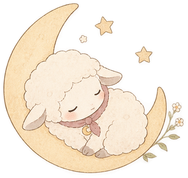
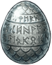

Web版 公開中 / iOS 準備中
頭痛手帳
気圧による頭痛などの痛みと服薬を記録し、直近30日の服薬日数を目安の範囲内で「やりくり」できるようにするアプリ。キャラクター「ねむひつじ」が寄り添います。
- 保存処理をリポジトリ層にまとめ、Web と iOS で切り替え
- 服薬カウントの計算ロジックに単体テスト
- 健康データは端末の外に送らない設計
Web Engineer / Indie App Maker
Webアプリケーションエンジニア。
業務では、教師や児童生徒向けのwebサービスの開発運用をしています。
休日は子どもと一緒に考えたゲームや学習アプリをつくっています。
01
これまでの歩み
営業経験後、社内の情報システム部門へ異動。
教師や児童生徒向けのWebサービスの運用開発を担当。
教科や商品ごとに約20種類に増えていたプログラムを、1つのSPAとして再設計してAWSへ移行。動画だけでなく音声・PDF・外部リンクもまとめて見られる「コンテンツハブ」に一新。
自社のプリント作成サービスの問題データから、簡単に作成できるWebサービスを設計・開発。「教科共通システム」としてAWS上に構築。
教科ごとに8つ乱立していた自社のプリント作成サービスを、Googleフォームミニテストも作れる1つのサービスとして、AWS上に統合中。
小学校教師向けWeb投影教材を、TypeScript × Vue.js で再開発し、モノレポ形式で統合。Claude Code などを使ったAI駆動開発で進め、再現できるように手順書を社内に公開中。
* は個人開発で使っている技術です。
02
個人で企画から開発まで手がけたアプリです。
Web版 公開中 / iOS 準備中
気圧による頭痛などの痛みと服薬を記録し、直近30日の服薬日数を目安の範囲内で「やりくり」できるようにするアプリ。キャラクター「ねむひつじ」が寄り添います。
Web 公開中 / 自分用
AWS 認定3資格(AI Practitioner / Cloud Practitioner / Solutions Architect)を、受験日までに取るための学習計画アプリ。スマホひとつで、思いついたその場で Claude Code に頼む「バイブコーディング」で作りました。
4本を App Store で配信中です。
iOS 配信中
1〜4人で遊べる、カードめくりゲーム。2枚そろえる「そろえる」、おぼえて当てる「みつける」、時間内に全部おもてにする「めくる」の3つの遊び方。8・16・24枚から選べて、ヒントもある。
03
アプリに登場するキャラクターたちです。さわってみてください。
「けいさん」「くく」「めくって」のピコのシリーズに登場するガイド役。SVGアニメーションで動き、つつくと「？」が「！」になります。
「ピコとけいさん1年生」にだけ登場する、水色・ピンク・黄緑の3匹。つつくと、にっこりします。
「だんごむしのぼうけん」の主人公。粘土のような質感で、つつくと丸まります。子どもと一緒に考えた動きで冒険します。
空から急降下してくる、ゲームの敵キャラクター。


「頭痛手帳」に登場する、赤いスカーフの女の子と青いスカーフの男の子。気分に合わせて切り替えて使えます。

「ピコとくく」で育てる、緑のたまご。九九の「れんしゅう」で段をクリアするたびに、ひびが入って生まれ、少しずつ大きくなっていきます。
たまご

04
作る前に、いつも3つ問いかけています。
入り組んだ要件を、シンプルな仕様に絞る。優先度と時期から、日程と進捗まで見ます。
約20種のプログラムを、1つのSPAへ集約。保守のしやすさとコストまで考えて作ります。
営業経験から、使う人の目線で。迷わせない画面で、使いやすさと価値を両立します。
個人開発は、AIと役割を分けながら進めています。
リポジトリごとに CLAUDE.md を置き、目的・守ること・確認の手順を書く。
方針や設計の判断は自分。仕様が決まった実装や単純作業はAIに任せる。
単体テストと、スマホサイズのスクリーンショット(Playwright)で確認する。
実機で遊び、気になるところはスクショに印をつけて伝える。
変更履歴と資料を毎回更新。次の会話でもAIが経緯をたどれる。
export interface KeyValueStore {
get(key: string): Promise<string | null>;
set(key: string, value: string): Promise<void>;
remove(key: string): Promise<void>;
}
// Web: localStorage / IndexedDB
// iOS: @capacitor/preferencesTEXT.md の表をビルド時に読み込み、日本語/ひらがなを切り替え。const SE = {
tap: ()=>{ tone({f0:660, f1:880, dur:0.06, type:'sine'}); },
pickup: ()=>{ tone({f0:880, f1:1320, dur:0.09, type:'triangle'}); },
roll: ()=>{ noise({f0:900, f1:280, dur:0.3}); },
// …36種。音声ファイルは1つも使わない
};shared/piko.js にまとめた。// 各アプリは参照するだけ。キャラの変更は shared/ の1か所で
initPiko({ prefix: 'home', size: 120 });
buildPikoVariantSVG({ color: 'pink', face: FACES.niko });
setPikoMouth('home', 'A'); // 口パク
playPikoBikkuri('home'); // ？→！改善リリースv155
遊んでみて気づいたことを、すぐ直す。その積み重ねの主な節目です。
05
業務や個人開発での工夫を、noteで書いていく予定です。公開したら、ここから読めるようにします。
乱立したサービスを1つにまとめてきた手順と判断
Claude Code / GitHub Copilot を使った開発フロー
個人開発で iOS アプリを配信するまで
06
読んでくださって、ありがとうございます。面談や仕事のご相談など、お気軽にご連絡ください。
このページのどこかに、どんぐりが5つ隠れています。
getPointAtLength で400点に分け、横の位置から高さと傾きを求めています。requestAnimationFrame で1フレームに1回にまとめ、重くならないようにしています。localStorage にだけ保存しています。